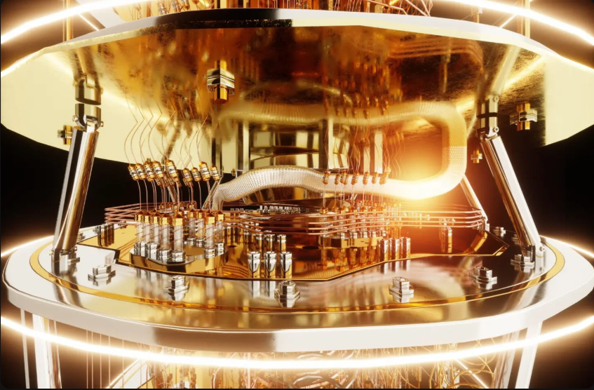
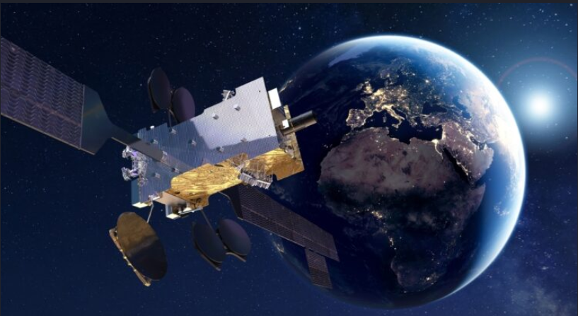
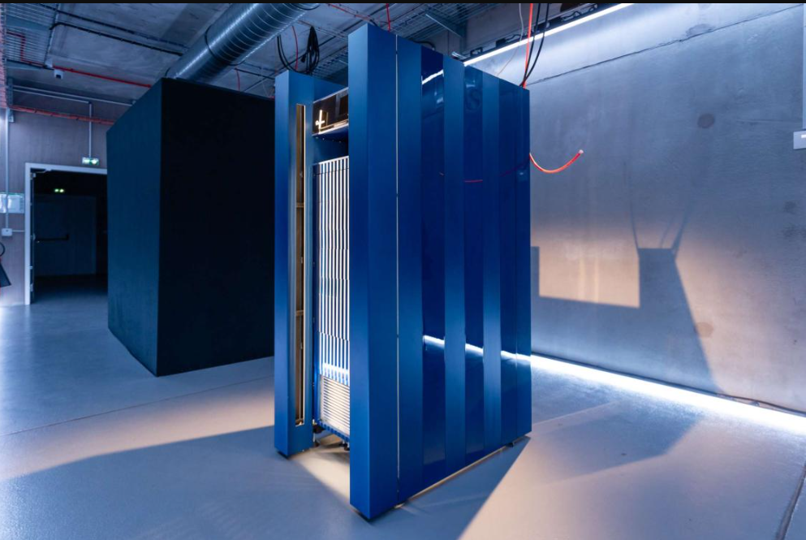
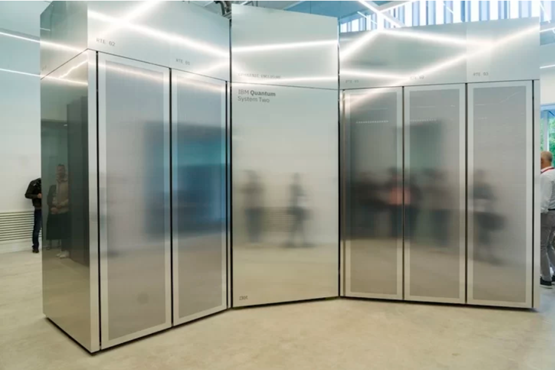
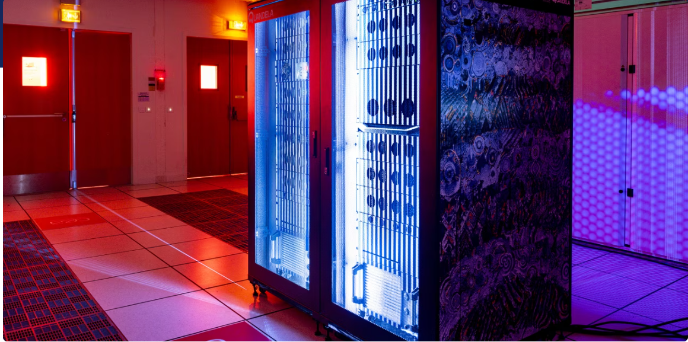
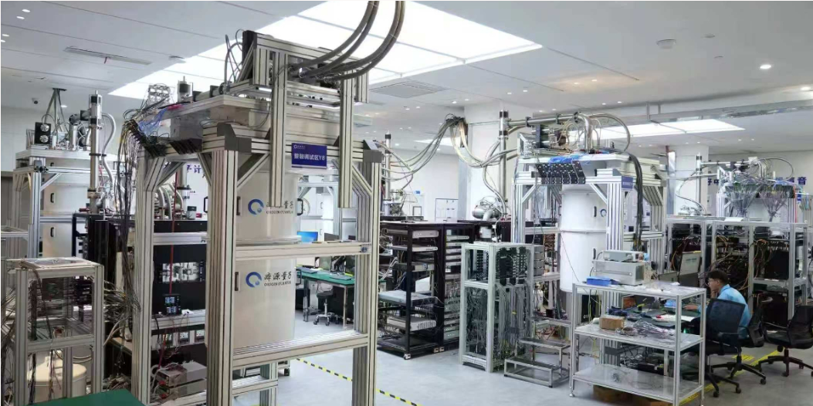

Quandela et Crédit Agricole mettent l'innovation quantique au service de la finance
Les deux acteurs ont publié les travaux issus de leur collaboration visant à optimiser les modèles de prédiction des risques de défaut de crédit grâce au quantique.
Une veille informatique consiste à ce tenir au courant des des avancées technologiques dans le domaine de l'informatique afin de tirer parti de ses avancées. Elle tend à l'automatisation et permet d'anticiper l'évolution des technologies.
J'ai décidé de traiter de l'informatique quantique. Bien que ce soit un sujet particulièrement complexe et méconnu, je pense qu'il se trouve être le vrai grand changement qui aura lieu dans quelques décennie bien au-delà de l'IA.
Afin d'appuyer mes propos et ma recherche je me suis servis de Google alerts avec des alertes "Quantum computing", "informatique quantique" ainsi que "Quandela". J'ai tout regroupé dans un feed InoReader et classé les articles selon mes préférences.
Les deux acteurs ont publié les travaux issus de leur collaboration visant à optimiser les modèles de prédiction des risques de défaut de crédit grâce au quantique.

Avant même l'avènement de l'ère de l'ordinateur quantique, des risques réels apparaissent déjà. Ceux qui souhaitent protéger leurs données à long terme doivent agir maintenant. Selon l'ISACA, une compréhension claire des risques et un plan d'action élaboré sont essentiels à cet effet.

Thales Alenia Space et Hispasat lancent le développement d'un système de distribution quantique de clés depuis des satellites en orbite géostationnaire. Objectif : protéger les communications sensibles de la menace quantique.

Disposant depuis 2023 d'un ordinateur quantique photonique, le leader européen du cloud développe son offre en lançant différents services. Objectif : renforcer la souveraineté numérique européenne et anticiper les futures menaces de l'informatique quantique offensive.

Inauguré par IBM et le gouvernement basque, l'ordinateur quantique IBM Quantum System Two a été installé dans les locaux de la fondation Ikerbasque, au centre de calcul quantique IBM-Euskadi.

La révolution des ordinateurs quantiques est en marche et elle envisage de plus en plus de joindre ses forces à celles du calcul haute performance (HPC), rendu possible par des supercalculateurs classiques comme le Joliot-Curie du CEA.

Origin Wukong, l'ordinateur quantique supraconducteur de troisième génération développé indépendamment par la Chine, a acquis de manière préliminaire la capacité de prendre en charge le calcul de l'intelligence artificielle (IA) et a lancé plusieurs outils d'IA quantique.
L'industrie des actifs numériques suit de près les avancées en informatique quantique, une technologie qui pourrait un jour bouleverser la sécurité des réseaux blockchain. Mais face à cette menace potentielle, le temps joue-t-il vraiment en faveur de Bitcoin ?